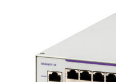

bp-os6465t-datasheet

R（触发场景）
- 运营商住宅/城域以太接入、三重播放（triple play）楼宇布线间选型
- 智慧城市/楼宇/交通部署中"宽温够用、预算比 6465 低"的 12 口小盒
- 楼宇子系统供电（照明/CCTV/HVAC）115W 预算核对
- 静音/弱电间环境对风扇启转温度的确认
I（核心理念）
OS6465T 是"扩展温度、价值型 L3 GbE"（原文p47 ："extended temperature, value, Layer 3 Gigabit Ethernet switches... ideal for residential/metro Ethernet triple play applications"）：-10~60°C 宽温、半机架 1RU、内置 AC 电源。层级：宽温城域接入，工业阵营中比 6465（-40~75°C 全加固）轻一档。
A1（与相邻系列选型差异）
- vs OS6465：6465 全加固（-40~75°C、双端子块电源、6KV 防雷、告警继电器、60W bt）；6465T 仅 -10~60°C、af/at 30W、内置单电源、无告警继电器——户外/震动/轨旁场景必须 6465。
- vs OS6570M：6570M 是城域 SP 边缘（全光 U28X、AC/DC 双电源、Metro 服务特性 + 许可升速）；6465T 面向楼内/室内的城域末端，价格更低。
- 同为 12 口半机架小盒：与 2260-24 比，6465T 有宽温 + L3（静态/VRRP/PBR）+ MACsec/1588v2。
A2（规格细节速查表）
机型矩阵（原文p48 表）： | 型号 | RJ45 | combo 口 | 100/1000 SFP | 电源 | PoE 预算 | |---|---|---|---|---|---| | OS6465T-12 | 8 | 2 | 2 | 内置 AC | — | | OS6465T-P12 | 8 PoE+ | 2 | 2 | 内置 AC | 115W（af/at） |
- 上联与堆叠：1G SFP 口组 VC，最多 4 台（未来可到 8，原文p48 ）；VC 连接可用任意 SFP 光模块或 SFP+ DAC。
- 交换容量与包转发（原文p49 ）：24 Gb/s 聚合、17.9 Mpps。
- 电源体系：内置 AC、Backup N/A（原文p48 ）；电源效率 85%；待机 8.5W、满载 16/19W（不含 PoE，原文p49 ）。
- Layer 特性：L3 静态路由 + VRRPv2/v3 + PBR/服务器负载均衡（原文p51 ）；Q-in-Q 802.1ad、Eth OAM 802.1ag/Y.1731/802.3ah、G.8032 环保护、MEF CE 3.0 认证（原文p51 Metro Ethernet access）；1588v2 12 口全支持、MACsec 10 口（combo 口除外，原文p48 ）；NDP/HA-VLAN 等为 *Future support（原文p50 /原文p51 ）；128 条 IPv4 路由、16k MAC（原文p49 ）。
- 功耗/环境：-10~60°C；45°C 以下无风扇静音运行、45~60°C 风扇 2 个启转且 56 dBA（原文p48 注 / 原文p49 ）；MTBF 1.30M~1.95M 小时；UL 2043 plenum 认证（原文p49 ）。
- 规格红线：仅 af/at 30W；单电源；VC 4 台。
E（适用场景）
- 运营商城域/住宅楼宇三重播放接入末端（原文p47 ）
- 智慧楼宇子系统低成本 PoE 供电（照明/CCTV/HVAC，115W，原文p47 ）
- 弱电间/吊顶静音环境（45°C 以下风扇停转零噪音）
- 收费站 IP 摄像头等轻量室外配套（无需 6465 级加固时）
B（限制与坑）
- 风扇仅 45~60°C 区间运转且噪音 56 dBA——静音/防尘环境注意该温度段（X14，原文p48 注）
- 仅 802.3af/at（115W 预算）——60W bt 设备上 6465
- Backup power N/A、单一内置 AC（原文p48 ）
- 温度上限 60°C，非全加固：-40°C 以下或 75°C 场景必须 6465
- MACsec 只有 10 口能力（combo 口不支持，原文p48 ）；MACsec 需站点许可 OS-SW-MACSEC（免费，原文p53 ）
- 路由表 128 条 IPv4（原文p49 ）——不适合做多子网大路由环境
来源：bp-omniswitch-datasheets DOC 6（p47-53，MPR00390268EN March 2026）；verified.md X14/P17/F1
仅供内部学习使用 · 教材版权归 ALE Training Services 所有